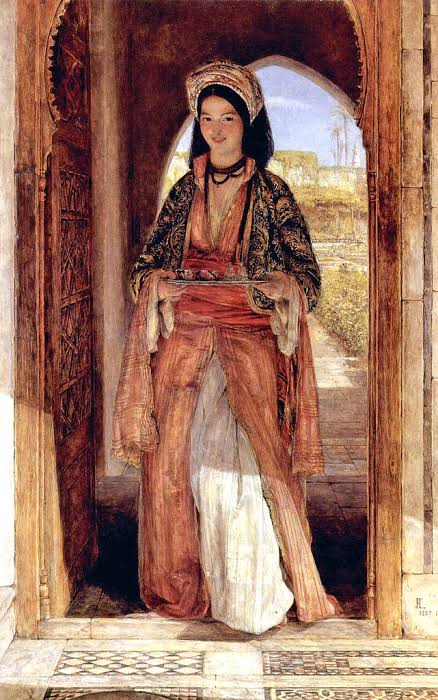
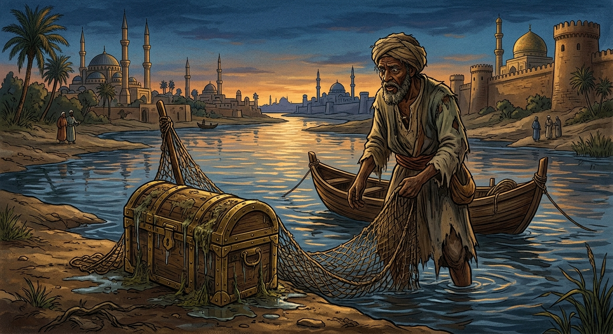
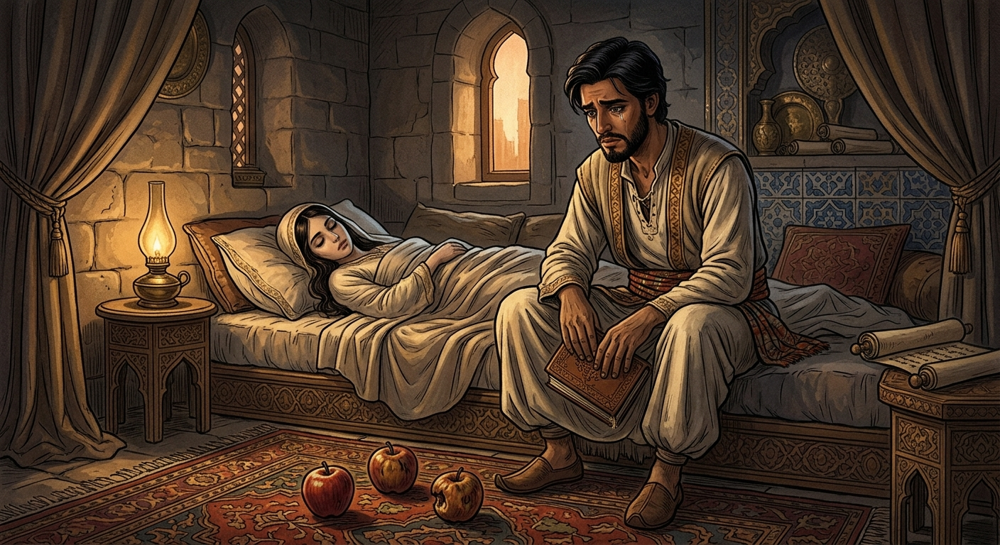
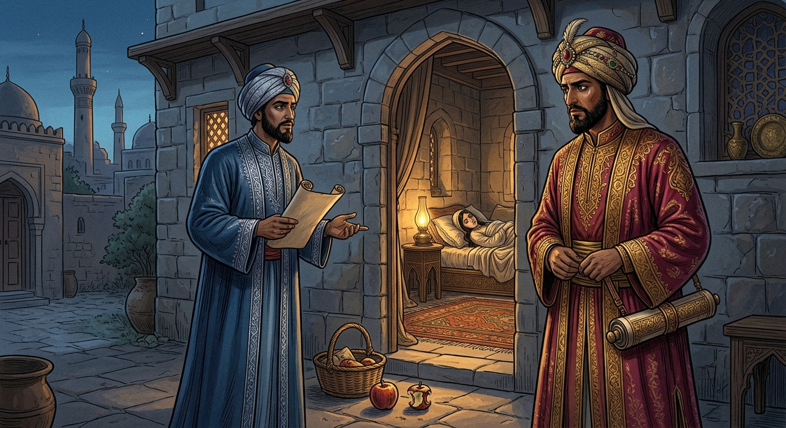

<meta charset="UTF-8">
<link rel="stylesheet" href="css/estilo1.css">
<link rel="stylesheet" href="css/libro1-estilos.css">
<link href="https://fonts.googleapis.com/css2?family=Open+Sans:wght@300;400;600;700&display=swap" rel="stylesheet">

<!-- Fragmento para inyectar en pagina.html (rutas relativas a pagina.html) -->
<article class="libro-detalle">

    <div class="libro-encabezado">
        <h2 class="titulo-seccion">Las mil y una noches</h2>
        <p class="libro-subtitulo">Relato: «La mujer despedazada, de las tres manzanas y del negro Rihán»</p>
    </div>

    <!-- Portada + ficha técnica -->
    <section class="libro-ficha">
        <figure class="libro-portada">
            
            <figcaption>Ilustración de portada</figcaption>
        </figure>

        <div class="libro-datos">
            <h3>Ficha del relato</h3>
            <ul>
                <li><strong>Nombre original de la obra:</strong> ألف ليلة وليلة (<em>Alf layla wa-layla</em>)</li>
                <li><strong>Nombre en español:</strong> Las mil y una noches</li>
                <li><strong>Relato:</strong> La mujer despedazada, de las tres manzanas y del negro Rihán</li>
                <li><strong>Autoría:</strong> Anónima y colectiva (recopilación de cuentos populares)</li>
                <li><strong>Época:</strong> Reunida entre los siglos VIII y XIV aproximadamente</li>
                <li><strong>Origen:</strong> Medio Oriente</li>
                <li><strong>Género:</strong> Cuento</li>
                <li><strong>Idioma original:</strong> Árabe</li>
            </ul>
        </div>
    </section>

    <!-- Audio -->
    <section class="libro-audio">
        <h3>Escucha la reseña</h3>
        <p>Toda la información de esta página, narrada en audio.</p>
        <audio controls preload="none">
            <source src="audios/la-mujer-despedazada.mp3" type="audio/mpeg">
            Tu navegador no admite el elemento de audio.
        </audio>
    </section>

    <!-- Personajes -->
    <section class="libro-bloque">
        <h3>Personajes principales</h3>
        <div class="libro-personajes">
            <div class="libro-personaje">
                <h4>El califa Harún al-Raschid</h4>
                <p>El gobernante de Bagdad, que exige resolver el misterio.</p>
            </div>
            <div class="libro-personaje">
                <h4>El visir Jafar</h4>
                <p>El consejero del califa, a quien se le ordena encontrar al culpable.</p>
            </div>
            <div class="libro-personaje">
                <h4>El joven esposo</h4>
                <p>El hombre que confiesa el crimen, cegado por los celos.</p>
            </div>
            <div class="libro-personaje">
                <h4>El anciano suegro</h4>
                <p>El padre de la mujer, que también se declara culpable.</p>
            </div>
            <div class="libro-personaje">
                <h4>El negro Rihán</h4>
                <p>El esclavo cuyo engaño provoca toda la tragedia.</p>
            </div>
        </div>
    </section>

    <!-- Resumen -->
    <section class="libro-bloque">
        <h3>Resumen</h3>
        <p>Un pescador encuentra en el río Tigris un cofre cerrado. Al abrirlo ante el califa Harún al-Raschid, descubren dentro el cuerpo de una joven. El califa ordena a su visir Jafar encontrar al culpable en tres días; si no lo logra, será castigado.</p>
        <p>Cuando el plazo está por terminar, dos hombres se presentan y cada uno asegura haber cometido el crimen: un joven, esposo de la mujer, y un anciano, su padre. El joven explica lo ocurrido: su esposa enfermó y deseaba comer manzanas. Él viajó lejos, consiguió tres y las llevó a casa, pero ella no quiso comerlas. Después, vio en la calle a un esclavo con una manzana igual, que presumía habérsela dado su amante. Creyendo que era su propia esposa, el joven volvió a casa, vio que solo quedaban dos manzanas y, cegado por la ira y los celos, cometió el terrible crimen.</p>
        <p>Más tarde descubrió la verdad: su hijo pequeño había tomado una de las manzanas y el esclavo Rihán se la había quitado. La mujer era inocente. Jafar debe entonces encontrar a Rihán, y descubre que el esclavo es de su propia casa. Así se aclara el misterio y el califa perdona al joven, pues el verdadero origen de la tragedia fue la mentira de Rihán.</p>
        <p class="libro-nota">Aviso: este resumen revela la trama completa del relato.</p>
    </section>

    <!-- Enseñanzas -->
    <section class="libro-bloque">
        <h3>3 enseñanzas del relato</h3>
        <ol class="libro-ensenanzas">
            <li>
                <strong>No actuar movidos por la ira.</strong>
                Las decisiones tomadas con rabia o celos pueden causar daños que ya no tienen remedio.
            </li>
            <li>
                <strong>Comprobar la verdad antes de acusar.</strong>
                Creer en las apariencias y no investigar puede llevarnos a cometer una injusticia terrible.
            </li>
            <li>
                <strong>Una mentira o un chisme pueden provocar una tragedia.</strong>
                Las palabras tienen consecuencias, y conviene hablar con responsabilidad y honestidad.
            </li>
        </ol>
    </section>

    <!-- Ilustraciones -->
    <section class="libro-bloque">
        <h3>Ilustraciones de la obra</h3>
        <div class="libro-galeria">
            <figure>
                
                <figcaption>El cofre en el río Tigris</figcaption>
            </figure>
            <figure>
                
                <figcaption>Las tres manzanas</figcaption>
            </figure>
            <figure>
                
                <figcaption>El califa y su visir</figcaption>
            </figure>
        </div>
    </section>

    <!-- Dónde conseguirlo -->
    <section class="libro-bloque libro-comprar">
        <h3>Dónde conseguir el libro</h3>
        <ul>
            <li>
                <strong>Comprar en librería:</strong>
                <a href="https://porrua.mx/las-mil-y-una-noches-9789700771533.html" target="_blank" rel="noopener">En la libreria Porrúa</a>
            </li>
            <li>
                <strong>Leer gratis (texto en español):</strong>
                <a href="https://www.suneo.mx/literatura/subidas/Anónimo%20Las%20Mil%20y%20Una%20Noches.pdf" target="_blank" rel="noopener">Las mil y una noches</a>
            </li>
        </ul>
    </section>

</article>